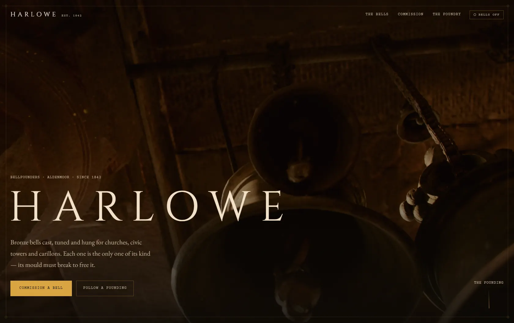

Written Down · Version 1.0 · August 2026 · Singapore
The site is the work.
Thornbury is new. We would rather you heard it from us.
A studio with thirty years behind it can point at the thirty years. We do not have that, and pretending otherwise would fail the first standard on this page. So we wrote down what we believe, what we refuse, and who is accountable when it goes wrong. This is that document.

-
Nothing here is inherited.
Every standard in this studio had to be written, argued over and agreed on. None of it arrived with the furniture. That is slower than adopting a house style, and it is the reason we can tell you why any decision was made.
-
We would rather be understood than admired.
A website can be impressive for five seconds. After that it has to be read, used on a phone with one thumb, and understood by someone who is not thinking about design at all. When those two disagree, the second one wins — every time, and in writing.
-
The second look is the one that counts.
Anything survives a glance. We build for the moment after it — an old phone, another developer reading the code, two years with nobody touching it. Every effect on this site can be switched off. Turn JavaScript off and the pages still work.
-
We say no in writing.
We publish a service only once we are confident in it — two of ours are still unlisted for exactly that reason. That costs us enquiries. Pretending otherwise would cost more.
-
Failure is budgeted, not hidden.
What we owe a client is not the pretence of never being wrong — it is that being wrong stays our problem, never theirs. On delivery you receive the repository, the hosting, the domain and the mailbox. If you walk away, nothing stays with us.
How the work goes
-
We look before we draw
The first deliverable is an audit, not a design. Sometimes it says you do not need us yet.
-
We decide in the open
Decisions are written where you can read them, with the reasoning attached.
-
We build it to survive us
Documented guardrails, a review pass, and nothing that relies on one person’s memory.
-
We hand over everything
Repository, hosting, domain, mailbox — ownership transfers completely on delivery.
How it’s built
-
Security
Headers, dependency and secret scanning, and a written review pass before anything ships. No unreviewed generated code reaches production.
-
Performance
Every effect is built to be switched off. Compressed media, nothing blocking the first paint, and a page that stays usable if the video never arrives.
-
Ownership
On delivery you get all of it — the repository, the hosting account, the domain and the mailbox. You own the site outright.
Who answers
Zhang Zhijie
Founder / CEO
Isaac
Co-Founder / COO
Accountability is the studio’s, not a job title’s. Behind the two of us, a founding team of around twenty — design, engineering, writing and research. Most are building their first company. None of them are a stock photograph of an office, which is why you will not find one on this page.
What sits behind the site
- Vercel
- Hosting and delivery. The site is served from whichever machine is nearest the person opening it.
- Supabase
- Data and accounts, for projects that need them — on an account that is yours.
- Resend
- Enquiries and automated messages, sent from your own domain.
- OWASP ZAP
- A public scanner for known issues, before launch and after changes.
- SonarCloud
- Reads the code rather than the running site, and flags trouble before it ships.
Platforms we build on — not partners, sponsors or endorsements. Neither of the last two makes a site unbreakable. Nothing does.
Written, dated and signed. It is a document, so it can be held against us.
Start a project